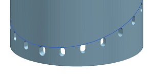

You can switch between a variational pattern feature and a simplified version.
In the Part Navigator, double-click Pattern (Along).
In the Pattern Method group, from the Method list, select Simple.
Notice there is no longer an option for Reusable References.
Also, in the Pattern Feature dialog box, in the Feature to Pattern group, the Select Feature option now has a (1) after it, because the Simple method can only pattern one feature.
In the Pattern Feature dialog box, click OK.

Notice the blend is no longer included in the patterned feature and the instances no longer reference the bottom of the cylinder.